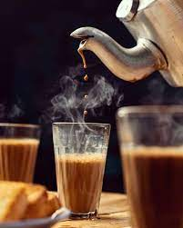

CHA Recipe!

Description
You just had a bad day...or the complete opposite, the best day ever.
you know what will make it better/complete? A nice cup of Cha!
Cha is the single best thing in the world. I would say a soul is
iincomplete without Cha. Cha also mean cha, which translates to
desire, and the only cha a Cha drinker can have is Cha.
Ingredients
- Water: 1/2 cup
- Milk: 1/2 cup
- Cardamom: 2 cushed pods
- Cloves: 2
- Fennel Seeds: a pinch
- Ginger (Optional): per taste
- Black tea (or loose tea equivalent): 2 Teaspoons
- Sugar: per taste
Steps:
- Pour water in to a bowl with the spices and let boil.
- Add tea bag and let it boil for 2 minutes.
- Once the water changer to a dark color, add milk.
- Add sugar per taste.
- Pour into a cup and enjoy!